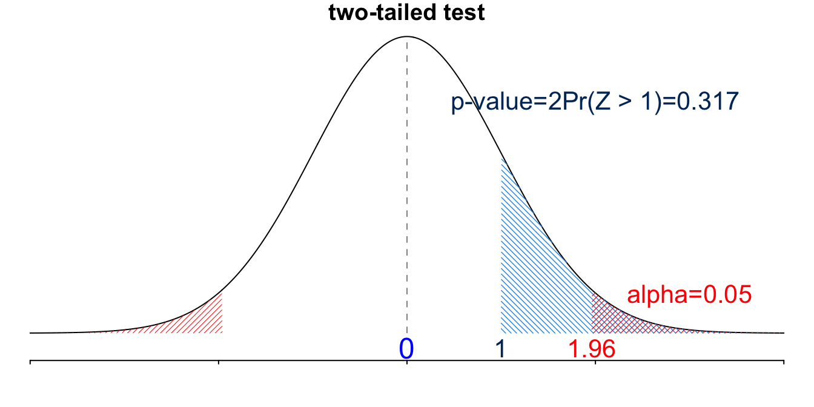

15 Hypothesis Testing
We finished the discussion of estimation, interval estimation in particular in the previous chapter. The other part of statistical inference is hypothesis testing. In this chapter, we first discuss the meaning a hypothesis in statistical analysis, followed by the testing procedures for population mean \(\mu\) when \(\sigma\) is known and when \(\sigma\) is unknown. Pay attention to similarity and difference of estimation and testing.
15.1 Introduction
What is Hypothesis Testing?
In statistics, a hypothesis is a claim or statement about a property of a population, often the value of a population distribution parameter. For example,
The mean body temperature of humans is less than \(98.6^{\circ}\) F. Here the mean body temperature is a property or characteristic of target population human beings. We can turn the verbal claim into a brief mathematical expression \(\mu < 98.6\).
Marquette students’ IQ scores has standard deviation equal to 15. The IQ score standard deviation is a characteristic of the population Marquette students. Mathematically, we can write the claim as \(\sigma = 15\).
You can see that we usually focus on claims about a population distribution parameter.
The null hypothesis, denoted \(H_0\), is a statement that the value of a parameter is equal to some claim value, or the negation of the alternative hypothesis that will be discussed in a minute. Often \(H_0\) represents a skeptical perspective or a claim to be tested, or the current status of the parameter. For example, the claim “the percentage of Marquette female students loving Japanese food is equal to 80%” is a \(H_0\) claim because of the key word “equal”. Usually we are not very convinced that the \(H_0\) claim is true, and in our analysis we want to test the claim, and see whether the evidence and information we collect is strong enough to make a conclusion that the percentage is not equal to 80%.
The alternative hypothesis, denoted \(H_1\) or \(H_a\), is a claim that the parameter is less than, greater than or not equal to some value. It is usually our research hypothesis of some new scientific theory or finding. If we think the percentage of Marquette female students loving Japanese food is greater than 80%, this hypothesis is the \(H_1\) claim. If after a formal testing procedure, we conclude that the percentage is greater than 80%, we sort of make a new research discovery that overturns the previous claim or status quo that the percentage is equal to 80%.
Let’s do one more exercise. Is the statement “On average, Marquette students consume less than 3 drinks per week.” a \(H_0\) or \(H_1\) claim? Because of the key word “less than”, it is a \(H_1\) claim.
So what is hypothesis testing? Hypothesis testing 1 is a procedure to decide whether or not to reject \(H_0\) based on how much evidence there is against \(H_0\). If the evidence is strong enough, we reject \(H_0\) in favor of \(H_1\).
Example
Before we jump into the formal hypothesis testing procedure, let’s talk about a criminal charge example. How a criminal is convicted is similar to the formal testing procedure.
Suppose a person is charged with a crime, and a jury will decide whether the person is guilty or not. We all know the rule: Even though the person is charged with the crime, at the beginning of the trial, the accuse is assumed to be innocent until the jury declares otherwise. Only if overwhelming evidence of the person’s guilt can be shown is the jury expected to declare the person guilty, otherwise the person is considered not guilty.

If we want to make a claim about whether the person is guilty or not, what are our \(H_0\) and \(H_1\)? Remember that the null hypothesis represents a skeptical perspective or a claim to be tested, or the current status of the parameter, so we have
- \(H_0:\) The person is not guilty üôÇ
This is how we write a hypothesis: start with \(H_0:\) followed by the statement. Being not guilty is the default status quo of anyone, although the jury may doubt or be skeptical of the person being not guilty. The prosecutors and police detectives are trying their best the collect enough strong evidence to proof beyond a reasonable doubt to the jury. Therefore the alternative hypothesis is
- \(H_1:\) The person is guilty üòü
In the example, the evidence could be photos, videos, witnesses, fingerprints, DNA, and so on . How do we decide to keep \(H_0\) or to accept \(H_1\)? After all evidence including defense attorney and prosecutor’s arguments are presented to the jury, the decision rule is the jury’s voting . Finally, to close the case, we need a conclusion that is the verdict “guilty” or “Not enough evidence to convict” .
Please go through the entire criminal charge process again:
\(H_0\) and \(H_a\) => Evidence => Decision rule => Conclusion
The process is quite similar to the formal procedure for a hypothesis testing.
15.2 How to Formally Do a Statistical Hypothesis Testing
The entire hypothesis testing can be wrapped up in the following six steps. No worries if you don’t have any idea of it. We will learn this step by step.
Step 0: Check Method Assumptions
Step 1: Set the \(H_0\) and \(H_a\) in Symbolic Form from a Claim
Step 2: Set the Significance Level \(\alpha\)
Step 3: Calculate the Test Statistic (Evidence)
Decision Rule I: Critical Value Method
Step 4-c: Find the Critical Value
Step 5-c: Draw a Conclusion Using Critical Value Method
Decision Rule II: P-Value Method
Step 4-p: Find the P-Value
Step 5-p: Draw a Conclusion Using P-Value Method
- Step 6: Restate the Conclusion in Nontechnical Terms, and Address the Original Claim
Step 0: Check Method Assumptions
Any statistical method is based on some assumptions. To use the method, and analyze our data appropriately, we have to make sure that the assumptions are satisfied. In this book, most of the distribution-based methods require
Random sample
The population is normally distributed and/or the sample size \(n > 30\).

Step 1: Set the \(H_0\) and \(H_1\) from a Claim
The first step of testing is to understand the \(H_0\) and \(H_1\) claims, and express them using mathematically using population parameters. The followings provdie three examples.
- üßë‚Äçüè´ The mean IQ score of statistics professors is higher than 120.
- \(\begin{align}&H_0: \mu \le 120 \\ &H_1: \mu > 120 \end{align}\)
- üíµ The mean starting salary for Marquette graduates who didn‚Äôt take MATH 4720 is less than $60,000.
- \(\begin{align} &H_0: \mu \ge 60000 \\ &H_1: \mu < 60000 \end{align}\)
- üì∫ The mean time between uses of a TV remote control by males during commercials equals 5 sec.
- \(\begin{align} &H_0: \mu = 5 \\ &H_1: \mu \ne 5 \end{align}\)
Keep in mind that the equality sign is always put in \(H_0\), and \(H_0\) and \(H_1\) are mutually exclusive. Also, the claims are for population parameters, not sample statistics. We are not sure the value of the parameter being tested, but we want to collect evidence, and see which claim about the parameter is supported by the evidence.
Step 2: Set the Significance Level \(\alpha\)
Next, we set the significance level \(\alpha\) that determines how rare or unlikely our evidence must be in order to represent sufficient evidence against \(H_0\). It tells us how strong the collected evidence must be in order to overturn the current claim. An \(\alpha\) level of 0.05 implies that evidence occurring with probability lower than 5% will be considered sufficient evidence to reject \(H_0\). Mathematically, \[\alpha = P(\text{Reject } H_0 \mid H_0 \text{ is true})\] As a result, \(\alpha = 0.05\) means that we incorrectly reject \(H_0\) 5 out of every 100 times we collect a sample and run the test.
Here is the idea. When we want to see if what we care about (the population parameter) is not as described as in the null hypothesis \(H_0\), we first assume or believe \(H_0\) is right, then based on this, we see if there is sufficient and strong evidence to conclude that it is probably not the case, and find the alternative hypothesis more reasonable.
Let’s explain \(\alpha\) by an example. Suppose we would like to test the claim that “The mean IQ of statistics professors is greater than 120.” Or in short \(H_0: \mu = 120\) vs. \(H_1: \mu > 120\). With large sample size, we can assume \(\overline{X}\) follows a normal distribution. Now, to test whether the mean IQ is greater than 120, we need to first treat the mean not being greater than 120 unless later we have sufficient evidence to say it is greater than 120. In particular, we need to do the test and analysis on the basis that the mean is under \(H_0\). That is, we first assume the mean is 120, or \(\mu = 120\), then see if the assumption really makes sense.
Because \(\overline{X}\) is normal, we do the test under the assumption that \(\overline{X} \sim N(120, \sigma^2)\) for some \(\sigma^2\), say \(9\). (Let’s focus on \(\mu\) and ignore \(\sigma\) at this moment). Now \(\alpha\) comes into play. If \(\overline{X}\) has mean 120, our sample data
The level \(\alpha\) is related to the \(\alpha\) used in confidence intervals for defining a “critical value”.
Step 3: Calculate the Test Statistic
- A test statistic is a statistical value used in making a decision about the \(H_0\).
- Suppose \(H_0: \mu = \mu_0\) and \(\quad H_1: \mu < \mu_0\) .
- When computing a test statistic, we assume \(H_0\) is true.
- When \(\sigma\) is known, the test statistic for testings about \(\mu\) is
\[\boxed{ z_{test} = \frac{\overline{x} - \color{blue}{\mu_0}}{\sigma/\sqrt{n}} }\] - When \(\sigma\) is unknown, the test statistic for testings about \(\mu\) is
\[\boxed{ t_{test} = \frac{\overline{x} - \color{blue}{\mu_0}}{s/\sqrt{n}} }\]
Step 4-c: Find the Critical Value
- The critical value(s) separates the rejection region or critical region, where we reject \(H_0\), from the values of the test statistic that do not lead to the rejection of \(H_0\).
- These depend on whether the test is a right-tailed, left-tailed or two-tailed.

- \(z_{\alpha}\) is such that \(P(Z > z_{\alpha}) = \alpha\) and \(Z \sim N(0, 1)\).
- \(t_{\alpha, n-1}\) is such that \(P(T > t_{\alpha, n-1}) = \alpha\) and \(T \sim t_{n-1}\).
| Condition | Right-tailed \((H_1: \mu > \mu_0)\) | Left-tailed \((H_1: \mu < \mu_0)\) | Two-tailed \((H_1: \mu \ne \mu_0)\) |
|---|---|---|---|
| \(\sigma\) known | \(z_{\alpha}\) | \(-z_{\alpha}\) | \(-z_{\alpha/2}\) and \(z_{\alpha/2}\) |
| \(\sigma\) unknown | \(t_{\alpha, n-1}\) | \(-t_{\alpha, n-1}\) | \(-t_{\alpha/2, n-1}\) and \(t_{\alpha/2, n-1}\) |
- \(z_{0.025} =\) 1.96, \(z_{0.05} =\) 1.64
- \(z_{\alpha}\) and \(t_{\alpha, n-1}\) are always positive.
Step 5-c: Draw a Conclusion Using Critical Value
- If the test statistic is
- in the rejection region, we reject \(H_0\).
- not in the rejection region, we do not or fail to reject \(H_0\).
Reject \(H_0\) if
| Condition | Right-tailed \((H_1: \mu > \mu_0)\) | Left-tailed \((H_1: \mu < \mu_0)\) | Two-tailed \((H_1: \mu \ne \mu_0)\) |
|---|---|---|---|
| \(\sigma\) known | \(z_{test} > z_{\alpha}\) | \(z_{test} < -z_{\alpha}\) | \(\mid z_{test}\mid \, > z_{\alpha/2}\) |
| \(\sigma\) unknown | \(t_{test} > t_{\alpha, n-1}\) | \(t_{test} < -t_{\alpha, n-1}\) | \(\mid t_{test}\mid \, > t_{\alpha/2, n-1}\) |

Step 4-p: Find the P-Value
- The \(p\)-value measures the strength of the evidence against \(H_0\) provided by the data.
- The smaller the \(p\)-value, the greater the evidence against \(H_0\).
- The \(p\)-value is the probability of getting a test statistic value that is at least as extreme as the one obtained from the data, assuming that \(H_0\) is true. \((\mu = \mu_0)\)
- For example, \(p\)-value \(= P(Z \ge z_{test} \mid H_0)\) for a right-tailed test.
- We are more likely to get a \(p\)-value near 0 when \(H_0\) is false than when \(H_0\) is true.
P-Value Illustration

Step 5-p: Draw a Conclusion Using P-Value Method
- If the \(p\)-value \(\le \alpha\) , we reject \(H_0\).
- If the \(p\)-value \(> \alpha\), we do not reject or fail to reject \(H_0\).
| Condition | Right-tailed \((H_1: \mu > \mu_0)\) | Left-tailed \((H_1: \mu < \mu_0)\) | Two-tailed \((H_1: \mu \ne \mu_0)\) |
|---|---|---|---|
| \(\sigma\) known | \(P(Z > z_{test} \mid H_0)\) | \(P(Z < z_{test} \mid H_0)\) | \(2P(Z > \,\mid z_{test} \mid \, \mid H_0)\) |
| \(\sigma\) unknown | \(P(T > t_{test} \mid H_0)\) | \(P(T < t_{test} \mid H_0)\) | \(2P(T > \, \mid t_{test} \mid \, \mid H_0)\) |
Both Methods Lead to the Same Conclusion

Step 6: Restate the Conclusion in Nontechnical Terms, and Address the Original Claim
- Reminder…

15.3 Example: Is the New Treatment Effective?
- A population of patients with hypertension is normal and has mean blood pressure (BP) of 150.
- After 6 months of treatment, the BP of 25 patients from this population was recorded.
- \(\overline{x} = 147.2\) and \(s = 5.5\).
- Goal: Determine whether a new treatment is effective in reducing BP.

Step-by-Step
Step 0: Check Method Assumptions
- A population of hypertension group is normal .
Step 1: Set the \(H_0\) and \(H_1\) from a Claim
- The claim that the new treatment is effective in reducing BP means the mean BP is less than 150, which is an \(H_1\) claim.
- \(\small \begin{align} &H_0: \mu = 150 \\ &H_1: \mu < 150 \end{align}\)
Step 2: Set the Significance Level \(\alpha\)
- Let’s set \(\alpha= 0.05\).
- This means we are asking, “Is there a sufficient evidence at \(\alpha= 0.05\) that the new treatment is effective?”
Step 3: Calculate the Test Statistic
- The test statistic is \(\small t_{test} = \frac{\overline{x} - \mu_0}{s/\sqrt{n}} = \frac{147.2 - 150}{5.5/\sqrt{25}} = -2.55\)
Step 4-c: Find the Critical Value
- The critical value is \(\small -t_{0.05, 25-1} = -t_{0.05, 24} = -1.711\)
Step 5-c: Draw a Conclusion Using Critical Value
- \(\small t_{test} = \frac{\overline{x} - \mu_0}{s/\sqrt{n}} = \frac{147.2 - 150}{5.5/\sqrt{25}} = -2.55\)
- \(\small -t_{0.05, 25-1} = -t_{0.05, 24} = -1.711\)
- We reject \(H_0\) if \(t_{test} < -t_{\alpha, n-1}\). Since \(\small t_{test} = -2.55 < -1.711 = -t_{\alpha, n-1}\), we reject \(H_0\).
Step 4-p: Find the P-Value
- This is a left-tailed test, so the \(p\)-value is \(P(T < t_{test})=P(T < -2.55) =\) 0.01
Step 5-p: Draw a Conclusion Using P-Value Method
- We reject \(H_0\) if the \(p\)-value < \(\alpha\). Since \(p\)-value \(= 0.01 < 0.05 = \alpha\), we reject \(H_0\).
Step 6: Restate the Conclusion in Nontechnical Terms, and Address the Original Claim
- There is sufficient evidence to support the claim that the new treatment is effective.
Example Calculation in R
- Below is a demonstration of how to work through this example using R.
## create objects for any information we have
alpha <- 0.05; mu_0 <- 150;
x_bar <- 147.2; s <- 5.5; n <- 25
## Test statistic
(t_test <- (x_bar - mu_0) / (s / sqrt(n))) [1] -2.545455## Critical value
(t_cri <- qt(alpha, df = n - 1, lower.tail = TRUE)) [1] -1.710882## p-value
(p_val <- pt(t_test, df = n - 1, lower.tail = TRUE)) [1] 0.00887815815.4 Example: Two-tailed z-test
- The milk price of a gallon of 2% milk is normally distributed with standard deviation of $0.10.
- Last week the mean price of a gallon of milk was 2.78. This week, based on a sample of size 25, the sample mean price of a gallon of milk was \(\overline{x} = 2.80\).
- Under \(\alpha = 0.05\), determine if the mean price is different this week.

Step-by-Step
Step 1: Set the \(H_0\) and \(H_1\) from a Claim
- This is an \(H_1\) claim: \(\small \begin{align}&H_0: \mu = 2.78 \\ &H_1: \mu \ne 2.78 \end{align}\)
Step 2: Set the Significance Level \(\alpha\)
- \(\small \alpha = 0.05\)
Step 3: Calculate the Test Statistic
- \(\small z_{test} = \frac{\overline{x} - \mu_0}{\sigma/\sqrt{n}} = \frac{2.8 - 2.78}{0.1/\sqrt{25}} = 1.00\)
Step 4-c: Find the Critical Value
- \(\small z_{0.05/2} = 1.96\).
Step 5-c: Draw a Conclusion Using Critical Value
- This is a two-tailed test, and we reject \(H_0\) if \(|z_{test}| > z_{\alpha/2}\). Since \(\small |z_{test}| = 1 < 1.96 = z_{\alpha/2}\), we DO NOT reject \(H_0\).
Step 4-p: Find the P-Value
- This is a two-tailed test, and the test statistic is on the right \((> 0)\), so the \(p\)-value is \(2P(Z > z_{test})=\) 0.317 .
Step 5-p: Draw a Conclusion Using P-Value Method
- We reject \(H_0\) if \(p\)-value < \(\alpha\). Since \(p\)-value \(= 0.317 > 0.05 = \alpha\), we DO NOT reject \(H_0\).
Step 6: Restate the Conclusion in Nontechnical Terms, and Address the Original Claim
- There is insufficient evidence to support the claim that this week the mean price of milk is different from the price last week.

Calculation in R
- Below is an example of how to perform the two-tailed Z-test in R.
## create objects to be used
alpha <- 0.05; mu_0 <- 2.78;
x_bar <- 2.8; sigma <- 0.1; n <- 25
## Test statistic
(z_test <- (x_bar - mu_0) / (sigma / sqrt(n))) [1] 1## Critical value
(z_crit <- qnorm(alpha/2, lower.tail = FALSE)) [1] 1.959964## p-value
(p_val <- 2 * pnorm(z_test, lower.tail = FALSE)) [1] 0.317310515.5 Testing Summary
- Below is a table that summarizes what we have learned about Hypothesis Testing in this chapter.
| Numerical Data, \(\sigma\) known | Numerical Data, \(\sigma\) unknown | |
|---|---|---|
| Parameter of Interest | Population Mean \(\mu\) | Population Mean \(\mu\) |
| Test Type | One sample \(\color{blue}{z}\) test \(H_0: \mu = \mu_0\) | One sample \(\color{blue}{t}\) test \(H_0: \mu = \mu_0\) |
| Confidence Interval | \(\bar{x} \pm z_{\alpha/2} \frac{\sigma}{\sqrt{n}}\) | \(\bar{x} \pm t_{\alpha/2, n-1} \frac{\color{blue}{s}}{\sqrt{n}}\) |
| Test Stat under \(H_0\) | \(z_{test} = \frac{\overline{x} - \mu_0}{\frac{\sigma}{\sqrt{n}}}\) | \(t_{test} = \frac{\overline{x} - \mu_0}{\frac{\color{blue}{s}}{\sqrt{n}}}\) |
| \(p\)-value under \(H_0\) |
\(H_1: \mu < \mu_0\) \(p\)-value \(=P(Z \le z_{test})\) |
\(H_1: \mu < \mu_0\) \(p\)-value \(=P(T_{n-1} \le t_{test})\) |
|
\(H_1: \mu > \mu_0\) \(p\)-value \(=P(Z \ge z_{test})\) |
\(H_1: \mu < \mu_0\) \(p\)-value \(=P(T_{n-1} \ge t_{test})\) |
|
|
\(H_1: \mu \ne \mu_0\) \(p\)-value \(=2P(Z \ge \, \mid z_{test}\mid)\) |
\(H_1: \mu \ne \mu_0\) \(p\)-value \(=2P(T_{n-1} \ge \, \mid t_{test} \mid)\) |
15.6 Type I and Type II Errors
- It is important to remember that hypothesis testing is not perfect.
- Because of this, Type I and Type II errors are important to understand.
| Decision | \(H_0\) is true | \(H_0\) is false |
|---|---|---|
| Reject \(H_0\) | Type I error | Correct decision |
| Do not reject \(H_0\) | Correct decision | Type II error |
- Back to the crime example:
- \(H_0:\) The person is not guilty v.s. \(H_1:\) The person is guilty
| Decision | Truth is the person innocent | Truth is the person guilty |
|---|---|---|
| Jury decides the person guilty | Type I error | Correct decision |
| Jury decides the person innocent | Correct decision | Type II error |
- \(\alpha = P(\text{type I error}) = P(\text{rejecting } H_0 \text{ when } H_0 \text{ is true})\)
- \(\beta = P(\text{type II error}) = P(\text{failing to reject } H_0 \text{ when } H_0 \text{ is false})\)

15.7 Exercises
-
Here are summary statistics for randomly selected weights of newborn boys: \(n =207\), \(\bar{x} = 30.2\)hg (1hg = 100 grams), \(s = 7.3\)hg.
- With significance level 0.01, use the critical value method to test the claim that the population mean of birth weights of females is greater than 30hg.
- Do the test in (c) by using the p-value method.
You are given the following hypotheses: \[\begin{align*} H_0&: \mu = 45 \\ H_A&: \mu \neq 45 \end{align*}\] We know that the sample standard deviation is 5 and the sample size is 24. For what sample mean would the p-value be equal to 0.05? Assume that all conditions necessary for inference are satisfied.
-
Our one sample \(z\) test is \(H_0: \mu = \mu_0 \quad H_1: \mu < \mu_0\) with a significance level \(\alpha\).
- Describe how we reject \(H_0\) using the critical-value method and the \(p\)-value method.
- Why do the two methods lead to the same conclusion?
Hypothesis testing is also called Null Hypothesis Statistical Testing (NHST), statistical testing or test of significance.↩︎